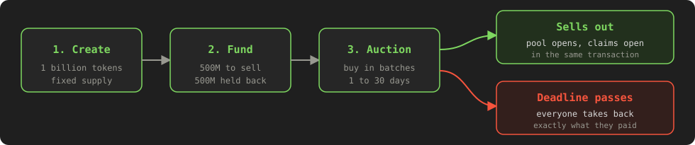
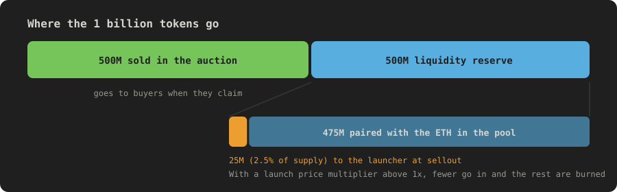
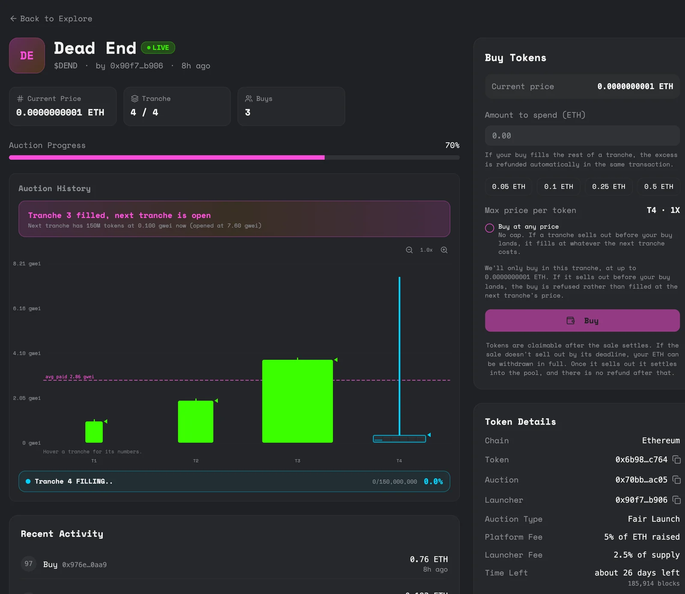

How it works
Every launch follows the same path. A token is created, half of it is sold in a batched auction, and the sale ends in one of two ways. Here's each stage.

Stage 1: Creating the token
The launcher gives the token a name and a ticker and, if they want, an image, a description and a linked X account. Supply is always 1 billion. Nobody chooses it.
The token has no owner and no admin switch, and no more can ever be minted.
Because no more tokens can be minted, the supply you see is the supply that exists. There's no hidden dilution from the token itself.
Stage 2: Funding and the 50/50 split
The sale has to hold the whole 1 billion before it can open. Once it does, the supply splits into two fixed halves.

| Half | What it's for |
|---|---|
| Sale allocation (500M) | The tokens sold to buyers in the auction. |
| Liquidity reserve (500M) | Held back to seed the trading pool if the sale sells out. The launcher's 2.5% of supply comes out of this half. |
The split is automatic and can't be changed. It's why a market exists at the end: half the tokens were always set aside to build it.
Stage 3: The auction
The sale runs in batches, which the app also calls tranches. Each batch has a size and an opening price. When one sells out the next opens, usually bigger and at a higher price. If the launcher has set a price decay, the price also drifts down inside a batch, block by block, towards a floor.
Pricing covers the settings and what to expect as a buyer.

When you buy, you don't get tokens straight away. You commit ETH and lock in your share, then claim your tokens once the sale has sold out. It works the same way for everyone.
Stage 4: How a sale ends
There are two endings, and only two.
It sells out
The buy that takes the last token does everything else in the same transaction. Fees are taken, the remaining ETH and reserve tokens are paired in a Uniswap pool, the pool's LP tokens are sent to a dead address, and claims open. There's no separate settlement step to wait for and nothing for anyone to press.
It runs out of time
Every sale has a deadline, set at launch between 1 and 30 days. If it hasn't sold out by then, buying stops and every buyer can withdraw exactly the ETH they paid. No pool is created. When a sale doesn't sell out has the detail.
Settlement runs inside that final buy. If it can't finish for any reason, the whole buy is rejected rather than half-applied, so a sale can't get stuck between sold out and settled.
Stage 5: A live market
After a sellout the token has a real trading pool behind it. Nobody holds the LP tokens, so nobody can pull the liquidity, including the launcher. Buyers claim their tokens and can trade from then on.
Recap
| Stage | Result |
|---|---|
| Create | A token exists with a fixed supply of 1 billion |
| Fund | Supply split 50/50 into the sale and the reserve |
| Auction | Buyers commit ETH batch by batch |
| Sells out | Pool created in the final buy, claims open |
| Deadline passes unsold | Buying stops, everyone takes back what they paid, no pool |